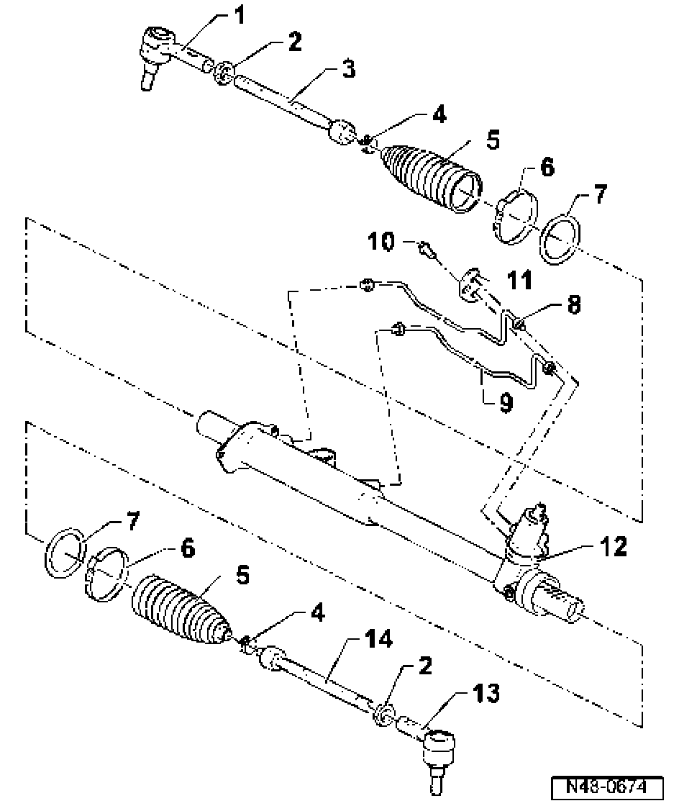

Power Steering, Servicing
Power steering, servicing

1. Right-hand tie rod ball joint
^ Marked with an "R"
^ Check dust caps for damage and correct seating
^ Tapered pin must be free of oil and grease
^ If necessary, clean with a dry cloth, do not use cleaning solution.
2. Hex nut
^ 70 Nm
3. Right-hand tie rod
^ 100 Nm
4. Spring clamp
5. Boot
^ Check for damage
^ Must not be twisted when adjusting tie rod
6. Clamp
^ Always replace
7. O-ring
^ Always replace
8. Control line
^ 7 Nm
^ When installing, make sure that the O-ring is not damaged
^ Install stress free
^ Do not damage surface, repair paint damage if necessary
9. Control line
^ 7 Nm
^ When installing, make sure that the O-ring is not damaged
^ Install stress free
^ Do not damage surface, repair paint damage if necessary
10. Torx bolt
^ 12 Nm
11. Backing plate
12. Power steering gear
13. Left-hand tie rod ball joint
^ Marked with an "L"
^ Check dust caps for damage and correct seating
^ Tapered pin must be free of oil and grease
^ If necessary, clean with a dry cloth, do not use cleaning solutions.
14. Left-hand tie rod
^ 100 Nm